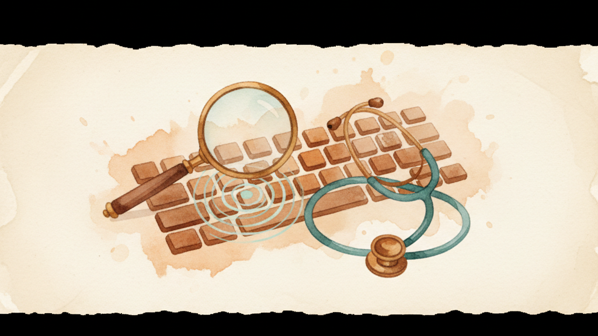

KeyPath includes tools for understanding what's happening under the hood — how your tap-hold keys are resolving, what keys you're pressing, and a way to test changes before committing. These are power-user features; you don't need them for everyday use, but they're invaluable when you're tuning timing or debugging a tricky remap.
Home row mods are the most timing-sensitive feature in KeyPath. The HRM Analytics panel shows you how Kanata is resolving your tap-hold decisions in real time:
┌─────────────────────────────────────────────────┐
│ HRM Analytics │
│ │
│ Decisions: 1,247 Tap: 89% Hold: 11% │
│ │
│ Avg decision time: 142ms │
│ Misfires (estimated): 2.1% │
│ │
│ Recent: │
│ F → tap (98ms, released before timeout) │
│ D → hold (210ms, opposite-hand J pressed) │
│ A → tap (112ms, released before timeout) │
└─────────────────────────────────────────────────┘Use this data to tune your hold timing. If your misfire rate is high, increase the hold timeout. If holds feel sluggish, decrease it. The analytics take the guesswork out of timing adjustments.
HRM Analytics are shown in KeyPath.app; keypath status reports only whether remapping is running.
Activity Insights gives you a bird's-eye view of your keyboard usage over time:
This helps you identify which packs are earning their keep and which you might remove. If a layer never gets activated, maybe it's not worth the key it's bound to.
A live timeline of every keypress, tap-hold decision, and layer change. Install the Keystroke History pack from the Pack Gallery to enable it.
┌─────────────────────────────────────────────────┐
│ Keystroke History │
│ │
│ 10:32:01 F pressed │
│ 10:32:01 Layer → home-arrows │
│ 10:32:01 J pressed → Left Arrow │
│ 10:32:01 K pressed → Down Arrow │
│ 10:32:02 F released │
│ 10:32:02 Layer → base │
│ 10:32:02 H pressed → h │
│ 10:32:02 E pressed → e │
└─────────────────────────────────────────────────┘The history shows exactly what Kanata sees and does — useful for debugging why a key isn't doing what you expect. You can see the raw key events, the tap-hold decisions, and the layer transitions in chronological order.
The Keystroke History pack is display-only — it doesn't change any key behavior, just observes and logs.
The simulator lets you test key sequences against your current config without actually pressing keys. Type a sequence, and KeyPath shows you what Kanata would output:
keypath simulate "caps h"
# Output: esc left (caps=escape via remap, h=left via nav layer)This is useful for:
The simulator uses Kanata's static analysis — it doesn't need the service running. It reads your config file and simulates the key processing pipeline.